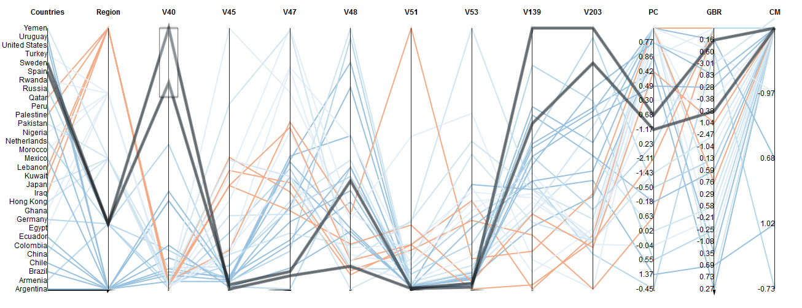
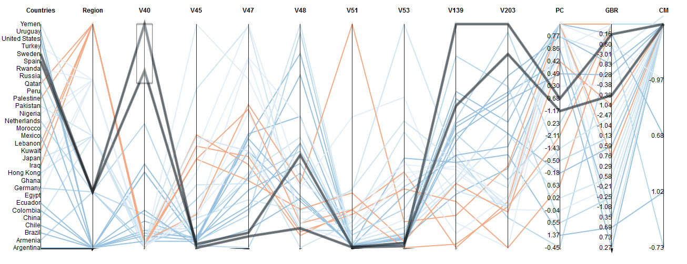

Analytic Trail 2
How does women's right relate to acceptance of homosexuality?
Here the dataset is bigger,with added Gapminder data. The data in Gapminder covers more countries and is of different nature. To add them to my parallel coordinate visualization, I calculated the average of each variable, counting only the available years of each period (the waves determined by World Value Survey). The added variables are related to education and violence, which is a indicator of how integrated into a society women are.
The average number of years of school attended by all women between 15 and 44. I made an average of the years in the periods.
Percentage of female students completing the last year of primary school. I made an average of the years in the periods.
Ratio of young literate females to males is the percentage of females to males ages 15-24 who can, with understanding, read and write a short, simple statement on their everyday life. I made an average of the years in the periods.
Average between the avaiable years in the periods.
Mortality due to self-inflicted injury among women, per 100 000 standard population. I made an average of the years in the periods.
Mortality among women due to inter-personal violence, per 100 000 standard population. I made an average of the years in the periods.
The percentage of women who are practicing, or whose sexual partners are practicing, any form of contraception. It is usually measured for married women ages 15-49 only. I made an average of the years in the periods.
With the data, I used d3 to create visualizations. I chose again Parallel Coordinates, so the correlations could be easily spotted. My code is largely based on this one. This visualization is interesting because the user has access to both parallel coordinates and table or results. It also allows the user to reorder axis, flip values, and brush results. The table is updated as the user interact with the visualization.
Again, we can see some correlations. For example, in this image we can see both Sweden and Spain highlited, for the period 2010-2014. They are countries with high V40 score (that means no issue with homosexual neighbors). What we can see is that both lines follow the same pattern and in all the variables these countries are the ones with better equality for woman.

And here we have selected Yemen, with the avaiable data for 1999 to 2004. As we can see, the society has a low acceptance of homosexual neighbors, a high rate of women murder, and a low girl/boy rate at school. This is an indicative of how the conservative the country is, with less acceptance of homosexuality and women's rights.


And here we have selected Yemen, with the avaiable data for 1999 to 2004. As we can see, the society has a low acceptance of homosexual neighbors, a high rate of women murder, and a low girl/boy rate at school. This is an indicative of how the conservative the country is, with less acceptance of homosexuality and women's rights.